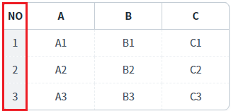
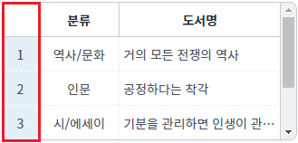
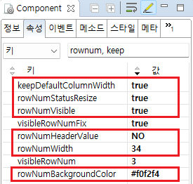

GridView의 행 번호 컬럼에 대한 추가 속성을 설정한 예제입니다.
아래 목록은 적용 속성별 설명입니다. - rowNumVisible : 행 번호 표시 여부 설정 - rowNumWidth : 행 번호 컬럼 너비(폭) 설정 - rowNumHeaderValue : 행 번호 컬럼의 헤더의 출력 값(레이블) 설정 - rowNumBackgroundColor : 행 번호의 바디 컬럼의 배경생 설정 - rowNumStatusResize : 행 번호 컬럼의 리사이즈 가능 여부 설정 - keepDefaultColumnWidth : 행 상태 컬럼 너비가 GridView에 'autoFit' 속성에 영향을 받지 않도록 설정
이 기능은 'rowNumVisible' 속성이 'true'로 설정되어야 동작합니다.
행 번호 표시 및 부가 기능 설정
행 번호 표시만 설정
예제 영역 '행 번호 표시 및 부가 설정'에 구성된 GridView에서 테스트합니다.1
실행 결과를 확인합니다.
- 첫 번째 컬럼에 행 번호가 표시됩니다. - 행 번호 컬럼 너비(폭)이 '34px'로 설정되었습니다. - 행 번호 컬럼의 헤더에 'NO'가 표시됩니다. - 행 번호의 바디 컬럼의 배경색이 '#f0f2f4'로 설정되었습니다. - 행 번호 컬럼의 리사이즈가 가능합니다. (헤더 컬럼에서 조작) - 행 번호 컬럼의 너비가 'autoFit' 속성의 설정에 영향을 받지 않습니다.
Image 1.브라우저(Chrome) 실행 예시

예제 영역 '행 번호 표시만 설정'에 구성된 GridView에서 테스트합니다.1
실행 결과를 확인합니다.
첫 번째 컬럼에 행 번호가 표시됩니다. GridView의 'autoFit' 속성이 'allColumn'으로 설정되어 GridView의 사이즈가 변경되면 행 번호 컬럼의 너비도 변경됩니다.
Image 2.브라우저(Chrome) 실행 예시

1
GridView의 속성을 정의합니다.
[필수] rowNumVisible="true"
[default:false, true] 행 번호 표시 여부
[선택] rowNumWidth="34"
행 번호 컬럼 너비(폭) 설정
[선택] rowNumWidth="34"
행 번호 컬럼 너비(폭) 설정
[선택] rowNumHeaderValue="NO"
행 번호 컬럼의 헤더의 문자열 설정
[선택] rowNumBackgroundColor="#f0f2f4"
행 번호의 바디 컬럼의 배경색 설정
[선택] rowNumStatusResize="true"
[default:false, true] 행 번호 컬럼의 리사이즈 가능 여부 설정
[선택] keepDefaultColumnWidth="true"
[default: false, true] autoFit이 설정되어 있는 경우, 행의 번호(rowNum)와 행의 상태(rowStatus) 컬럼의 너비를 고정
Image 3.웹스퀘어 스튜디오의 Component View - 속성 설정 예시

Example 1.Source
<!-- gridView 의 소스 본문 예시 --> <w2:gridView rowNumVisible="true" rowNumWidth="34" rowNumHeaderValue="NO" rowNumBackgroundColor="#f0f2f4" rowNumStatusResize="true" keepDefaultColumnWidth="true"> <!-- 중략 --> </w2:gridView>
keepDefaultColumnWidth
rowNumVisible
rowNumWidth
rowNumHeaderValue
rowNumBackgroundColor
rowNumStatusResize
setStartRowNumber( rowIndex )